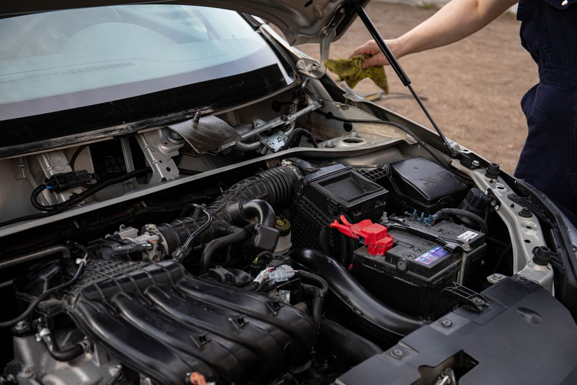

How to Identify and Test a Weak Car Battery
If you’ve ever found your car stubbornly refusing to start, chances are the culprit is a weak battery. Testing and maintaining your car battery is an essential part of basic car maintenance, even for non-mechanicians. This article will guide you through identifying the symptoms of a weak battery and show you how to test it yourself.

Photo: Sergey Meshkov / Pexels
Understanding the Symptoms of a Weak Car Battery
A weak car battery can manifest in several ways:
-
Difficulty Starting the Car: If your car takes more than a few seconds to start, it’s a sign of a weak battery. The battery may not have enough charge to crank the engine over quickly.
-
Dim or Flickering Lights: A weak battery can cause your headlights, dashboard lights, and even interior lights to appear dim or flicker. This is because the battery is not providing the full voltage needed to power the lights.
-
Sluggish Electrical Systems: Other electrical systems in your car, such as the wipers, may operate more slowly or inefficiently.
-
Warning Lights: Some cars will display a battery warning light on the dashboard. This could indicate a weak battery or a problem with the battery charging system.
-
Dead Battery: In the worst-case scenario, your car may not start at all, indicating a completely dead battery.
Testing Your Car Battery
Testing your car battery is a simple process that you can do yourself. Here’s a step-by-step guide:
Step 1: Check the Battery Voltage
Photo: James Collington / Pexels
- Materials Needed: A voltmeter, a car battery charger (optional).
- Procedure: Park your car in a warm place and turn off the engine. Use your voltmeter to check the battery voltage. A fully charged battery should read between 12.6 and 12.8 volts. A reading below 12.4 volts indicates a weak battery.
Step 2: Use a Battery Tester
- Materials Needed: A battery tester (can be a separate tool or part of a multimeter).
- Procedure: Turn on the tester and connect it to the battery terminals. Follow the tester’s instructions to get a reading. Most testers will indicate whether the battery is good, needs charging, or is dead. A good battery should read around 12.6 volts.
Step 3: Measure the Battery’s Cold-Cranking Amps (CCA)
- Materials Needed: A multimeter.
- Procedure: Use the multimeter to measure the battery’s CCA. This test requires a deep freeze; you will need to place the battery in a freezer overnight (about 12 hours). The next day, measure the battery’s voltage while it’s at 0°F (-18°C). A battery with 500 CCA or more is generally considered adequate for most cars.
Step 4: Inspect the Battery
- Materials Needed: A flashlight, safety gloves.
- Procedure: Open the battery compartment and inspect the battery. Look for signs of corrosion, swelling, or cracks. Corrosion can be cleaned with a mixture of baking soda and water, but if the battery is cracked or swollen, it should be replaced.
Scenario Example
Imagine you’re driving to work and the car struggles to start. You check the battery with a voltmeter and find it reads 12.2 volts. This is a clear sign of a weak battery. You decide to test further with a battery tester, which reads “replace.” The next day, you place the battery in the freezer for 12 hours. After thawing, you measure the CCA, which comes in at 400, indicating a weak battery. You decide to replace the battery before it causes a more significant issue.
Conclusion
Testing your car battery is a crucial step in maintaining your vehicle’s performance and avoiding unexpected breakdowns. By following these steps, you can identify and address a weak battery before it becomes a bigger problem. Remember, a weak battery can lead to costly repairs, so regular checks can save you time and money.
Recommended products
As an Amazon Associate, I earn from qualifying purchases.